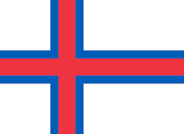

| Sverige |
|---|
|
| Huvudstad: Stockholm |
| Invånare: ca 10,3 miljoner |
| Lands yta: 447 435 km² |
| Språk: Svenska |
| Statsskick: Konstitutionell monarki |
| Danmark |
|---|
 |
| Huvudstad: Köpenhamn |
| Invånare: ca 5,8 miljoner |
| Lands yta: 43 561 km² |
| Språk: Danska |
| Statsskick: Konstitutionell monarki |
| Finland |
|---|
 |
| Huvudstad: Helsingfors |
| Invånare: ca 5,5 miljoner |
| Lands yta: 338 430 km² |
| Språk: Finska och Svenska |
| Statsskick: Republik |
| Norge |
|---|
 |
| Huvudstad: Oslo |
| Invånare: ca 5,3 miljoner |
| Lands yta: 323 781 km² |
| Språk: Norska |
| Statsskick: Konstitutionell monarki |
| Island |
|---|
 |
| Huvudstad: Reykjavik |
| Invånare: ca 370 000 |
| Lands yta: 103 492 km² |
| Språk: Isländska |
| Statsskick: Republik |
| Grönland |
|---|
 |
| Huvudstad: Nuuk |
| Invånare: ca 56 000 |
| Lands yta: 2 166 086 km² |
| Språk: Grönländska |
| Statsskick: Självstyre, danmark |
| Färöarna |
|---|
|  |
| Huvudstad: Torshamn |
| Invånare: ca 53 000 |
| Lands yta: 1396 km² |
| Språk: Färöiska |
| Statsskick: Självstyre, danmark |
| Åland |
|---|
 |
| Huvudstad: Mariehamn |
| Invånare: ca 30 000 |
| Lands yta: 1 581 km² |
| Språk: Svenska |
| Statsskick: Självstyre, finland |